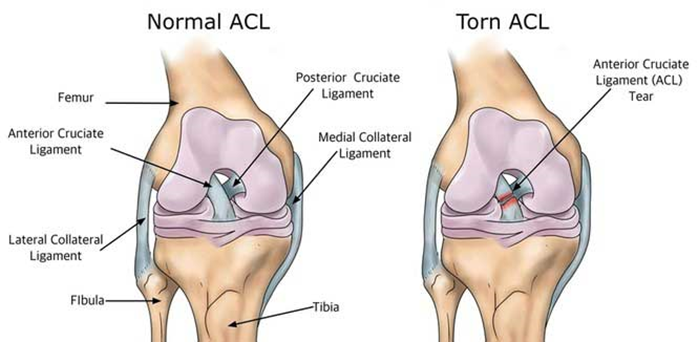
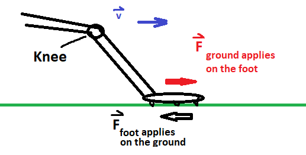

Super Bowl LVI, OBJ, and you
The Super Bowl is always an exciting event as it marks the end of a NFL season. For many, it is an occasion to get together with your friends and family to share a meal and enjoy the game and the halftime show. The raw emotions displayed by the players at the end of the game is captivating: it is the Vince Lombardi trophy for one team, and abrupt ending of the season for the other team. For me, the scene that hits the most home was Odell Beckham Jr (OBJ) just realized the Los Angeles Rams are the Super Bowl LVI champions.
When roughly 4 minutes were remaining in the second quarter, OBJ suffered a non-contact left knee injury when running a crossing route as seen in the video below
To the untrained eye, this may not seem like a big deal: OBJ took a bad step and perhaps sprained his knee. However, early reports point towards an Anterior Cruciate Ligament (ACL) tear which is a hard injury to recover from.
The main problem with total ACL tears for adults is that it does not self heal, and a surgery is generally required to fully return to contact sports (sports with a lot of change of directions). We will not discuss the medical side of an ACL recovery but rather the biomechanical side of the injury. First, where is the ACL located, and what is its purpose?

In the image above, we observe that the ACL is a ligament which connects the tibia to the femur. Its functional purpose is to resist anterior movements(forward movement) of the tibia relative to the femur. In other words, if the femur remains fixed in place, but the tibia travels forward, the ACL applies a restoring force to bring back the tibia to its original position.
The likelihood of an ACL non-contact injury dramatically increases when a sudden deceleration occurs (landing on one foot or abruptly stopping) followed by a rapid change in direction (ref 2). This intuitively makes sense because when you decelerate, your foot applies a stopping force on the ground. Therefore, by Netwon’s third law (Action-Reaction principle) the ground applies applies an equal and opposite force on the feet. This forces is then translated to the tibia, which then increases relative movement of the tibia with respect to the femur, thereby loading the ACL. This is visualized below by this simple sketch.

When one couples a stop with a rapid change of direction towards the inside of the body, i.e. if you stop with the right foot, you go to the left (and vice-versa with the left foot), this increases the likelihood of an ACL tear (ref 3).
Fortunately, muscles around the knee help reduce the load on the ACL, but they cannot completely prevent it. Recent studies have shown that having developed hamstring muscles reduces the risk of ACL tears
So what can we learn from this?
Now we know the injury mechanism of the ACL, we can understand why most likely, OBJ may have torn his ACL. It is well established in the literature that a large deceleration followed by a rapid change of direction can cause an ACL tear, and this is what we can observe in the OBJ video in the Super Bowl. We can see him slightly slowing down prior to making the catch, and then planting that left leg with the intent making a cut towards back towards the inside to juke his defender. Hence, the ACL tearing mechanism is observed, a sudden deceleration followed by a change of direction. Furthermore, it also does not help that his left knee was previously operated from another ACL tear suffered in 2020.
This next part is subjective and based on my personal experience, having suffered an ACL tear to my right knee in 2012. So, disclaimer, this is not medical advice. Please seek help from qualified professionals if you think you are suffering from an ACL injury.
Most of the time, non-contact ACL tears are caused when the athlete is really pushing hard. So my biggest prevention technique would be to remove this mental “requirement” to always go overly hard on the play. Is risking a tough knee injury worth getting a few extra yards on the play? For me, today, the answer is obviously no, but when I was younger, and playing football, I did not have that perspective. I used to throw a fuss when a player would run out of bounds instead of taking the contact to get a few extra yards. Yes sometimes, the situation warrants it, but most of the time the answer is no. For example, if you are playing with your friends in a pickup flag football game, why would you put your knee through so much stress when you are running your 5 yard in route? It is truly fine if your cut isn’t very pronounced, because in the grand scheme of things, who cares? Who cares if you are not targeted, or the pass is incomplete, or worse, you lose the game? Who cares? Really, who cares? But let me tell you, if the alternative happens, that is, you tear your ACL because you were too going hard with those strong decelerations followed by a rapid change of direction, then you will have a lot of time to think about if it was worth going so hard, and definitely come to the conclusion that it was not worth it. So why think about possibility only after the fact? In my opinion, prevention is the best outcome because even after the knee is operated, its does not completely feel the same as it was before.
A lot of what was written here was tailored to American Football, but this is also transferable to different sports. Again, when playing pickup basketball, it is worth thinking about if drawing a foul when going for a layup if it means landing awkwardly and increasing your chances of injuries (rolling an ankle for example)?
__________________________________
1 – Image taken from : https://www.biaphysio.com/why-do-i-have-to-wait-so-long-after-my-acl-reconstruction/torn-acl-pic/
2 – Waldén M, Krosshaug T, Bjørneboe J, Andersen TE, Faul O, Hägglund M. Three distinct mechanisms predominate in non-contact anterior cruciate ligament injuries in male professional football players: a systematic video analysis of 39 cases. Br J Sports Med. 2015;49(22):1452-60.[/efn_note] [efn_note]Krosshaug T, Nakamae A, Boden BP, Engebretsen L, Smith G, Slauterbeck JR, et al. Mechanisms of Anterior Cruciate Ligament Injury in Basketball: Video Analysis of 39 Cases. Am J Sports Med. 2007;35(3):359-67.
3 – Blackburn JT, Norcross MF, Cannon LN, Zinder SM. Hamstrings stiffness and landing biomechanics linked to anterior cruciate ligament loading.